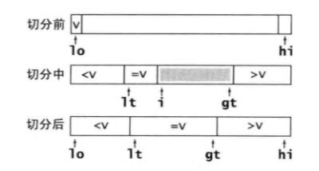
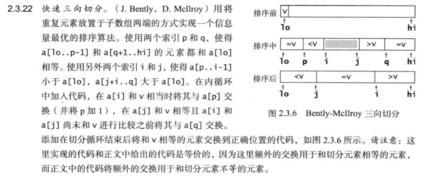
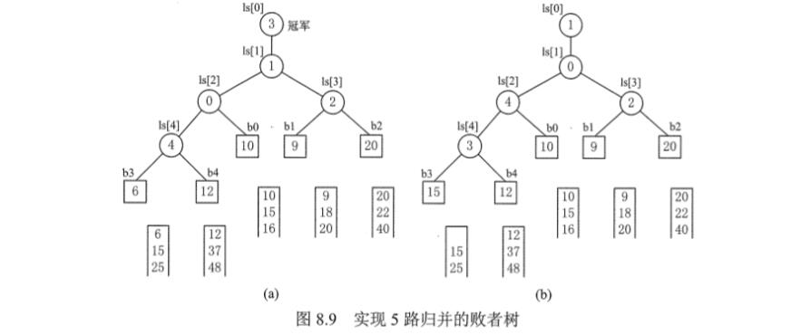
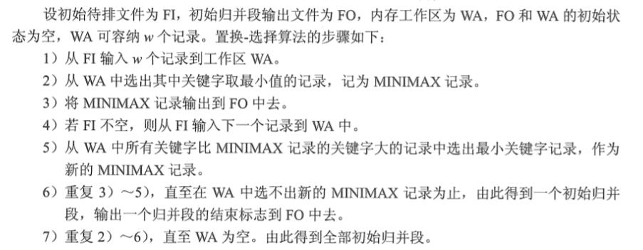
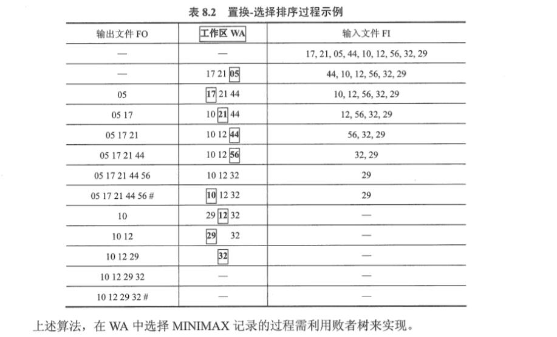
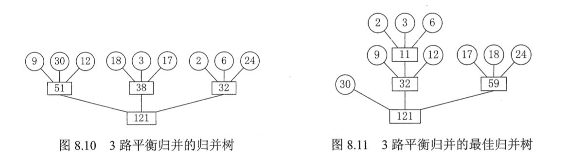

内部排序
插入排序
基本原理:每次将一个待排序的元素按其关键字大小插入到前面已经排好序的子序列中,直到全部记录插入完成.
插入排序在待排序列为正序时最优,时间复杂度为$O(N)$,在逆序时最差,时间复杂度为$O(N^{2})$
直接插入排序
- 伪代码:
1.查找出L(i)在L[1...i-1]中的插入位置k.
2.将L[k..i-1]中所有元素一次后移一个位置
3.将L[i]复制到L(k).
- C++代码
vector<int> InsertSort(vector<int>& nums) {
for(int i = 1; i < nums.size();++i)
{
int t = nums[i];
int j = 0;
for(j = i-1; j >= 0 && t < nums[j]; --j)
nums[j+1] = nums[j];
nums[j+1] = t;
}
return nums;
}
折半插入排序
- 直接插入排序中,对于查找插入的位置通过$O(N)$的方法按顺序遍历
- 因为前面待插入部分已经排好序,所以利用二分法可以减少元素的比较次数
- 比较次数从$O(N^{2})$降为$O(log_{2}N)$
- 但是插入的时候仍要在数组平移仍需O(N)的复杂度
- 所以,折半插入排序的复杂度仍为$O(N^{2})$
- C++代码
vector<int> HalfInsertSort(vector<int>& nums) {
for(int i = 1; i < nums.size();++i)
{
int t = nums[i];
int lo = 0, hi =i-1;
while(lo <= hi)
{
int mid = lo + (hi-lo)/2;
if(nums[i] > nums[mid]) lo = mid+1;
else if(nums[i] <= nums[mid]) hi = mid-1;
}
for(int j = i-1;j >= lo;--j)
nums[j+1] = nums[j];
nums[lo] = t;
}
return nums;
}
希尔排序
- 又名缩小增量排序:
- 排序过程:
- 先取一个小于N的步长d1,把表中的全部记录分成d1组,所有距离为d1的倍数的记录放在同一组,在各组内进行直接插入排序.
- 然后取第二个步长d2 < d1,重复上述过程
- 直到所取到的dt=1,即所有记录已放在同一组,再进行直接插入排序,由于此时已经具有较好的局部有序性,故可以很快得到最终结果.
- 平均时间复杂度:$O(N^{1.3})$
- 最坏时间复杂度”$O(N^{2}$
vector<int> ShellSort(vector<int>& nums) {
for(int s = nums.size()/2; s > 0; s/=2)
{
for(int i = s; i < nums.size();++i)
{
int t = nums[i];
int j;
for(j = i-s; j >=0 && t < nums[j] ; j-=s)
{
nums[j+s] = nums[j];
}
nums[j+s] = t;
}
}
return nums;
}
交换排序
- 算法原理:根据序列中两个元素关键字的比较结果来对换这个记录在序列中的位置,以此来达到序列的有序.
冒泡排序
基本思想:每次两两比较相邻的元素的值,若为逆序则交换它们,知道序列比较完.以此冒泡排序可以确定一个元素的位置.最多n-1趟冒泡就能把所有元素排好序.
朴素冒泡排序
vector<int> BubbleSort(vector<int>& nums) {
int n = nums.size();
bool flag = false;
for(int i = 0; i < n; ++i)
{
for(int j = 1; j < n-i; ++j)
{
if(nums[j] < nums[j-1])
{
swap(nums[j-1],nums[j]);
flag = false;
}
}
if(flag) break;
}
return nums;
}
- 优化
- 每次冒泡时判断是否发生了交换,如果未发生交换说明已经拍好序,直接退出
vector<int> sortArray(vector<int>& nums) {
int n = nums.size();
for(int i = 0; i < n; ++i)
{
bool flag = false; //记录本次冒泡是否已经排好序(即是否发生交换)
for(int j = 1; j < n-i; ++j)
{
if(nums[j] < nums[j-1])
{
swap(nums[j-1],nums[j]);
flag = true;
}
}
if(!flag) break;
}
return nums;
}
快速排序
朴素快速排序
int Partition(vector<int>& nums,int i,int j)
{
int pviot = nums[i];
while(i < j)
{
for(;i < j && nums[j] >= pviot; --j);
nums[i] = nums[j];
for(;i < j && nums[i] < pviot; ++i);
nums[j] = nums[i];
}
nums[i] = pviot;
return i;
}
void quickSort(vector<int>& nums,int i ,int j)
{
if(i < j)
{
int pviotPos = Partition(nums,i,j);
quickSort(nums,i,pviotPos-1);
quickSort(nums,pviotPos+1,j);
}
}
非递归朴素快排(用栈)
利用栈模拟快排
void nrQuickSort(vector<int>& nums,int i,int j) { stack<int> s; s.push(i); s.push(j); while(!s.empty()) { //框定范围 int right = s.top(); s.pop(); int left = s.top(); s.pop(); //切分 int pviot = nums[left]; int lo = left; int hi = right; while(lo < hi) { for(;lo < hi && nums[hi] >= pviot; --hi); nums[lo] = nums[hi]; for(;lo < hi && nums[lo] < pviot; ++lo); nums[hi] = nums[lo]; } nums[lo] = pviot; int pviotPos = lo; //模拟递归 if( pviotPos - left > 1) { s.push(left); s.push(pviotPos-1); } if(right - pviotPos > 1) { s.push(pviotPos+1); s.push(right); } } }
非递归原地快排
- 待补
可参考
如何用非递归、不用栈的方法，实现原位（in-place）的快速排序？
Creating quicksort without recursion and stack
Can quicksort be implemented in C without stack and recursion?
快排优化:优化哨兵选择+元素聚集(熵最优排序)+优化小数组-> 三数取中+三向切分+插排 -> 快速三向切分
参考:算法第四版
参考:聊聊4种主流排序算法(番外篇):快速排序的优化历程
参考:快速排序及其优化
- 优化小数组
- 对于小数组,快速排序比插入排序慢
- 原因:因为递归存在开销
- 一般在元素在5~15之间的数组大小适合用插入排序
优化哨兵选择
- 使用子数组的一小部分元素的中位数来切分数组
- 这样可以避免所选取的哨兵处于极端情况,当哨兵是数组中位数的时候最优.
- 但是计算一部分元素的中位数会存在开销
- 一般三数取中效果最好
- 使用子数组的一小部分元素的中位数来切分数组
元素聚集
- 通常实际应用中数组中会存在大量相同的元素,可以利用
荷兰旗问题中的思想,将数组划分为小于等于和大于哨兵的三部分 - 这种方法是三向切分
- 通常实际应用中数组中会存在大量相同的元素,可以利用
算法第四版中的方法
- 当子数组大小 <= 8 时，切换到插入排序
- 当子数组大小 <= 40 时，使用三取样切分（median-of-3）选择切分元素
- 当子数组大小 > 40 时，使用 Tukey’s ninther 方法选择切分元素(在)
- 使用Bentley-McIlroy的三向切分
朴素快速三向切分

// 三数取中+朴素三向切分+插排
void InsertSort(vector<int>& nums,int i,int j)
{
for(int lo = i+1; lo <= j; ++lo)
{
int t = nums[lo],hi;
for(hi = lo-1; hi >=i ; --hi)
{
if(nums[hi] > t)
nums[hi+1] = nums[hi];
else
break;
}
nums[hi+1] = t;
}
}
int median3(vector<int>& nums,int i,int j,int k)
{
return nums[i] < nums[j] ?
(nums[j] < nums[k] ? j : (nums[i] < nums[k] ? k : i)) :
(nums[j] > nums[k] ? j : (nums[i] < nums[k] ? i : k)) ;
}
void quick3way(vector<int>& nums,int i ,int j)
{
if(i < j)
{
if( j-i+1 <= 8)
{
HalfInsertSort(nums,i,j);
return;
}
int pviotPos = median3(nums,i,i+(j-i)/2,j);
swap(nums[i],nums[pviotPos]);
int pviot = nums[i];
int lo = i, hi = j, p = i+1;//[i...lo) <pviot
//[lo...hi] =pviot
//(hi...j] >pviot
while(p <= hi)
{
if(nums[p] > pviot)
{
swap(nums[hi--],nums[p]);
}
else if(nums[p] < pviot)
{
swap(nums[lo++],nums[p++]);
}
else
{
++p;
}
}
quick3way(nums,i,lo-1);
quick3way(nums,hi+1,j);
}
}
Bentley-McIlroy快速三向切分
- 在朴素三向切分中含有大量的元素对换
- 只有在元素等于pviot时才不会发生对换
- Bentley-McIlroy将元素划分为4个部分，只交换相等的元素,具体思路如下:

// Bentley-McIlroy快速三向切分 伪代码
1. 将数组序列划分为四部分，如图所示
nums[lo...p] == pviot
nums[q...hi] == pviot
nums[p+1...i-1] < pviot
nums[j+1...q-1] > pviot
2. 所以,初始化下列参数
i = lo,
p = lo+1,
j = hi+1,
q = hi;
pviot = nums[lo];
3. 循环处理
3.1 从左向右寻找 >= pviot的元素
3.2 从右向左寻找 <= pviot的元素
3.3 处理循环结束条件以及边界情况
3.3.1 当 i == j 时 判断该元素是否 == pviot,做特殊处理
3.3.2 当 i >=j 时 退出循环
3.4 将左边>=pviot的nums[i]与右边<=pviot的nums[j]交换,维护>pviot和<pviot的区间
3.5 判断左边和右边是否 == pviot ,实则与相应的nums[p]和nums[q]交换维护==pviot的区间
4. 将 == | < | > | == 的区间转换为< | == | > 的区间
5. 递归处理
// 最终版:三数取中 or Tukey's ninter + Bentley-McIlroy三向切分 + 折半插排
void HalfInsertSort(vector<int>& nums,int lo,int hi)
{
for(int i = lo+1;i <= hi; ++i)
{
int t = nums[i];
int j = 0, k = i-1;
while(j <= k)
{
int mid = j + (k-j)/2;
if(nums[mid] >= t)
k = mid-1;
else if(nums[mid] < t)
j= mid+1;
}
for(int m = i-1;m >= j; --m)
nums[m+1] = nums[m];
nums[j] = t;
}
}
int Mid3(vector<int>& nums,int i ,int j ,int k)
{
return nums[i] > nums[j] ? // i < j > k
nums[j] > nums[k] ? j : (nums[i] > nums[k] ? k : i):
nums[j] < nums[k] ? j : nums[i] > nums[k] ? i : k;
}
void BMQuick3Way(vector<int>& nums,int i,int j)
{
int n = j-i+1;
if(n <= 8)
{
HalfInsertSort(nums,i,j);
return;
}
int pviotpos;
int mid = i + (j-i)/2;
if(n <= 40)
pviotpos = Mid3(nums,i,mid,j);
else
{
int epos = n/8;
int mid1 = Mid3(nums,i,i+epos,i+epos+epos);
int mid2 = Mid3(nums,mid-epos,mid,mid+epos);
int mid3 = Mid3(nums,j-epos-epos,j-epos,j);
pviotpos = Mid3(nums,mid1,mid2,mid3);
}
swap(nums[pviotpos],nums[i]);
int p = i,q = j+1;
int lo = i+1,hi = j;
int pviot = nums[i];
while(true)
{
for(;nums[lo] < pviot; ++lo);
for(;nums[hi] > pviot; --hi);
if(lo == hi && nums[lo] == pviot)
swap(nums[++p],nums[lo]);
if( lo >= hi)
break;
swap(nums[lo],nums[hi]);
if(nums[lo] == pviot)
swap(nums[++p],nums[lo++]);
if(nums[hi] == pviot)
swap(nums[--q],nums[hi--]);
}
lo = hi+1;//这步操作的原因是,当边界条件是nums[lo] == nums[hi] == pviot的时,lo和hi指向同一个位置 | ---- lo == hi | ------ |
//其他情况则 | ---- hi |lo --- |
//所以这一步用于保证lo和hi的相对位置,统一操作
for(int k = i ; k <= p; ++k)
swap(nums[k],nums[hi--]);
for(int k = j ; k >= q; --k)
swap(nums[k],nums[lo++]);
BMQuick3Way(nums,i,hi);
BMQuick3Way(nums,lo,j);
}
非递归三向切分
- 待补
选择排序
- 基本思想:每一趟(如第
i趟)在后面n-i+1个待排元素中选取关键字最小的元素,作为有序子序列的第i个元素,知道n-1趟做完,待排元素只剩下1个,就不用选了.
简单选择排序
- 算法:

vector<int> SelectSort(vector<int>& nums) {
for(int i = 0; i < nums.size();++i)
{
int pos = i;
for(int j = i +1 ; j < nums.size();++j)
{
if(nums[j] < nums[pos])
pos = j;
}
swap(nums[i],nums[pos]);
}
return nums;
}
堆排序
- 二叉堆的定义:
n个关键字序列L[1…n]称为堆 <==>
1) L(i) >= L(2i) && L(i) >= L(2i+1) 或者 //大顶堆
2) L(i) <= L(2i) && L(i) <= L(2i+1) //小顶堆
堆的建立(堆的元素插入)
- 将新元素加入到数组末尾,增加堆的大小并让这个新元素上浮(Swim)到合适的位置
删除最大元素(堆的排序)
- 删除堆顶的元素(大根堆的最大元素)并将数组的最后一个元素放到堆顶,建小堆的大小并让这个元素下沉到合适的位置
堆排实现
void swim();//向上调整,用于堆的插入和构建
void sink(vector<int>& nums,int len,int k)//向下调整,用于堆的删除和堆排序,无序数组构建二叉堆
{
//从1开始的二叉树, 左孩子2 *k ,右孩子 2*k +1
///从0开始的二叉树, 左孩子2 *k+1 ,右孩子 2*k +2
for(int i = 2 *k+1 ; i < len; i = 2*i+1)
{
if(i+1 < len && nums[i] < nums[i+1])
++i;
if(nums[i] > nums[k])
{
swap(nums[i],nums[k]);
k = i;
}
else
break;
}
}
void buildHeap();
void heapInsert();
void heapDelete();
void heapSort(vector<int>& nums,int n)
{
//从1开始的二叉树, n/2为最后一个分支结点
//从0开始的二叉树, (n-1)/2为最后一个分支结点
for(int i = (n-1)/2; i >= 0; --i)
sink(nums,n,i);
for(int i = n-1; i > 0; --i)
{
swap(nums[0],nums[i]);
sink(nums,i,0);
}
}
归并排序
递归归并排序
void Merge(vector<int>& nums,int i,int mid,int j)
{
vector<int> v(j-i+1,0);
int cnt = 0;
int lo = i,hi = mid+1;
while(lo <= mid && hi <= j)
{
if(nums[lo] < nums[hi])
v[cnt++] = nums[lo++];
else
v[cnt++] = nums[hi++];
}
while(lo <= mid)
v[cnt++] = nums[lo++];
while(hi <= j)
v[cnt++] = nums[hi++];
for(int k = 0 ; k < cnt; ++k)
{
nums[i+k] = v[k];
}
}
void MergeSort(vector<int>& nums,int i,int j)
{
if(i < j)
{
int mid = i + (j-i)/2;
MergeSort(nums,i,mid);
MergeSort(nums,mid+1,j);
Merge(nums,i,mid,j);
}
}
非递归归并排序
void Merge(vector<int>& nums,int i,int mid,int j)
{
vector<int> v(j-i+1,0);
int cnt = 0;
int lo = i,hi = mid+1;
while(lo <= mid && hi <= j)
{
if(nums[lo] < nums[hi])
v[cnt++] = nums[lo++];
else
v[cnt++] = nums[hi++];
}
while(lo <= mid)
v[cnt++] = nums[lo++];
while(hi <= j)
v[cnt++] = nums[hi++];
for(int k = 0 ; k < cnt; ++k)
{
nums[i+k] = v[k];
}
}
void MergeSort(vector<int>& nums,int i,int j)
{
int n = nums.size();
for(int sz = 1; sz < n; sz += sz)//步长
{
for(int i = 0; i + sz < n; i += 2*sz)
{
Merge(nums,i,i+sz-1,min(i+sz+sz-1,n-1));
}
}
}
非比较排序
- 特点:
- 一个数该放在哪里，是由这个数本身的大小决定的，它不需要经过比较。也可以认为是哈希的思想：由数值映射地址。
- 因此这三种算法一定需要额外的空间才能完成排序任务，时间复杂度可以提升到O(N)，但适用场景不多，主要是因为使用这三种排序一定要保证输入数组的每个元素都在一个合理的范围内
计数排序
参考:一文弄懂计数排序算法！
基础版(时间复杂度与元素值有关,不稳定排序)
- 找出原数组中元素值最大的，记为max,最小值为min
- 创建一个新数组count，其长度是max-min+1，其元素默认值都为0
- 遍历原数组中的元素，以原数组中的元素作为count数组的索引，以原数组中的元素出现次数作为count数组的元素值。
- 遍历count数组，找出其中元素值大于0的元素,并输出
// 参考代码
public int[] countSort2(int[] A) {
// 找出数组A中的最大值、最小值
int max = Integer.MIN_VALUE;
int min = Integer.MAX_VALUE;
for (int num : A) {
max = Math.max(max, num);
min = Math.min(min, num);
}
// 初始化计数数组count
// 长度为最大值减最小值加1
int[] count = new int[max-min+1];
// 对计数数组各元素赋值
for (int num : A) {
// A中的元素要减去最小值，再作为新索引
count[num-min]++;
}
// 创建结果数组
int[] result = new int[A.length];
// 创建结果数组的起始索引
int index = 0;
// 遍历计数数组，将计数数组的索引填充到结果数组中
for (int i=0; i<count.length; i++) {
while (count[i]>0) {
// 再将减去的最小值补上
result[index++] = i+min;
count[i]--;
}
}
// 返回结果数组
return result;
}
前缀和版（时间复杂度为N,稳定排序）
- 找出数组中的最大值
max、最小值min。 - 创建一个新数组
count，其长度是max-min加1，其元素默认值都为0。 - 遍历原数组中的元素，以原数组中的元素作为
count数组的索引，以原数组中的元素出现次数作为count数组的元素值。 - 对
count数组变形，新元素的值是前面元素累加之和的值，即count[i+1] = count[i+1] + count[i]; - 创建结果数组
result，长度和原始数组一样。 - 遍历
数组元素，count[A[j]-min]-1为A[j]在结果数组result中的位置,然后对count[A[j]-min]自减1
- 要想保证稳定排序,则最后一步时逆序遍历或者在求前缀和nums[i]的对应为为count[1…i-1]的前缀和
//逆序遍历
public int[] countSort4(int[] A) {
// 找出数组A中的最大值、最小值
int max = Integer.MIN_VALUE;
int min = Integer.MAX_VALUE;
for (int num : A) {
max = Math.max(max, num);
min = Math.min(min, num);
}
// 初始化计数数组count
// 长度为最大值减最小值加1
int[] count = new int[max-min+1];
// 对计数数组各元素赋值
for (int num : A) {
// A中的元素要减去最小值，再作为新索引
count[num-min]++;
}
// 计数数组变形，新元素的值是前面元素累加之和的值
for (int i=1; i<count.length; i++) {
count[i] += count[i-1];
}
// 创建结果数组
int[] result = new int[A.length];
// 遍历A中的元素，填充到结果数组中去，从后往前遍历
for (int j=A.length-1; j>=0; j--) {
result[count[A[j]-min]-1] = A[j];
count[A[j]-min]--;
}
return result;
}
基数排序
- 计数排序是基于关键字
各位(比如个十百千)的大小进行排序,是一种借助多关键字排序的思想对但逻辑关键字排序的方法. - MSD(最高位优先法):按关键字位权重
递减依次逐层划分为若干更小的子序列,最后将所有子序列依次链接成一个有序序列. - LSD(最低位优先法):按关键字位权重
递增依次逐层划分为若干更小的子序列,最后将所有子序列依次链接成一个有序序列.
- 分配操作
- 创建n个空队列,每个队列枚举某个关键字的所有可能并排好序,然后依次遍历元素中当前考察关键字的大小,放入对应的队列中.
- 收集操作
- 将各个队列中的结点依次首尾链接,得到新的序列.
- 在对每个关键字进行了分配和收集操作后将得到最终有序的数组.
//年前时瞎写的代码,没验证准确性
#include <stdio.h>
#include <stdlib.h>
#include <string.h>
#include <time.h>
#include <math.h>
#define SIZE 10
void RadixSort(int a[]);
void Traverse(int a[],int m);
int temp[10][100];//临时数组（桶数组）
int count[100] = {0};//桶中长度
int main(void)
{
int a[SIZE];
srand(time(0));
int i;
for(i=0;i<SIZE;i++)
{
a[i] = rand()%1000+1;
}
Traverse(a,10);
RadixSort(a);
Traverse(a,10);
}
int GetDigit(int a,int d)//数a，获取d位上的数
{
int m[]={1,1,10,100};
return ((a/m[d])%10);
}
void Traverse(int a[],int m)
{
int i;
for(i=0;i<m;i++)
{
printf("%d ",a[i]);
}
printf("\n");
}
void RadixSort(int a[])
{
int d;
int t;
int j=0;
int k=0;
int i;
int l;
for(d=1;d<=3;d++)
{
for(i=0;i<10;i++)
{
count[i] = -1;
}
k=0;
for( i = 0; i<SIZE; i++)
{
t = GetDigit(a[i],d);
temp[t][++count[t]] = a[i];
}
for(i=0;i<SIZE;i++)
{
for(l=0;l<= count[i];l++)
{
a[k++] = temp[i][l];
}
}
Traverse(a,SIZE);
}
}
桶排序
- 原理：将数组按照步长放在不同的桶里，桶的数量根据数组长度和步长确定，数组全部入桶之后，每个桶内进行排序，按顺序将所有桶的数据合并。
public class Solution {
// 桶排序
// 1 <= A.length <= 10000
// -50000 <= A[i] <= 50000
// 10_0000
private static final int OFFSET = 50000;
public int[] sortArray(int[] nums) {
int len = nums.length;
// 第 1 步：将数据转换为 [0, 10_0000] 区间里的数
for (int i = 0; i < len; i++) {
nums[i] += OFFSET;
}
// 第 2 步：观察数据，设置桶的个数
// 步长：步长如果设置成 10 会超出内存限制
int step = 1000;
// 桶的个数
int bucketLen = 10_0000 / step;
int[][] temp = new int[bucketLen + 1][len];
int[] next = new int[bucketLen + 1];
// 第 3 步：分桶
for (int num : nums) {
int bucketIndex = num / step;
temp[bucketIndex][next[bucketIndex]] = num;
next[bucketIndex]++;
}
// 第 4 步：对于每个桶执行插入排序
for (int i = 0; i < bucketLen + 1; i++) {
insertionSort(temp[i], next[i] - 1);
}
// 第 5 步：从桶里依次取出来
int[] res = new int[len];
int index = 0;
for (int i = 0; i < bucketLen + 1; i++) {
int curLen = next[i];
for (int j = 0; j < curLen; j++) {
res[index] = temp[i][j] - OFFSET;
index++;
}
}
return res;
}
private void insertionSort(int[] arr, int endIndex) {
for (int i = 1; i <= endIndex; i++) {
int temp = arr[i];
int j = i;
while (j > 0 && arr[j - 1] > temp) {
arr[j] = arr[j - 1];
j--;
}
arr[j] = temp;
}
}
}
内部排序性能分析
总览
- 稳定性:排序过程中,相同大小的元素值在排序过后是扔保持相对位置.
| Name | Best | Average | Worst | Memory | Stable | Method | Array | LinkList | ||
|---|---|---|---|---|---|---|---|---|---|---|
| 插入排序 | n | $n^{2}$ | $n^{2}$ | 1 | Yes | Insertion | $\surd$ | $\surd$ | ||
| 折半插入排序 | n | $n^{2}$ | $n^{2}$ | 1 | Yes | Insertion | $\surd$ | $\surd$ | ||
| 希尔排序 | $nlog_{2}{n}$ | $n^{1.3}$ | $n^{2[1]}$ | 1 | No | Insertion | $\surd$ | $X$ | ||
| 冒泡排序 | n | $n^{2}$ | $n^{2}$ | 1 | Yes | Exchanging | $\surd$ | $\surd$ | ||
| 快速排序 | $nlog_{2}{n}$ | $nlog_{2}{n}$ | $n^{2}$ | $log_{2}{n}^{[2]}$ | NO | Exchanging | $\surd$ | $X^{[3]}$ | ||
| (简单)选择排序 | $n^{2}$ | $n^{2}$ | $n^{2}$ | 1 | $NO^{[4]}$ | Selection | $\surd$ | $\surd$ | ||
| 堆排序 | $nlog_{2}{n}$ | $nlog_{2}{n}$ | $nlog_{2}{n}$ | 1 | NO | Selection | $\surd$ | $X$ | ||
| 归并排序 | $nlog_{2}{n}$ | $nlog_{2}{n}$ | $nlog_{2}{n}$ | $n^{[5]}$ | YES | Merging | $\surd$ | $\surd$ | ||
| 计数排序 | $n + r^{[7]}$ | $n + r$ | $n + r$ | YES | Non-comparison | $\surd$ | $?^{[6]}$ | |||
| 基数排序 | $d(n+r)^{[8]}$ | $d(n+r)$ | $r$ | YES | Non-comparison | $\surd$ | $?^{[6]}$ | |||
| 桶排序 |
- [1]希尔排序的最差情况由增量序列决定,使用{n/2,n/4,…,1}的最差情况为$O(n^{2}$)
- [2]快速排序的一般版本为递归实现,也可以实现非递归版本,此时空间复杂度为$O(1)$
- [3]快速排序一般不用于链表排序,但是强行写也不是不行
- [4]普通选择排序是不稳定的,但是如果使用新数组存储排序结果或者对链表进行排序则是稳定的
- 使用新数组会导致时间复杂度为O(n)
- 对链表使用选择排序,每次选择最小的结点,并用头插法重新加入链表中.
- [5]对于归并排序递归和非递归都需要O(n)的空间复杂度,但是对于递归来说还需要$log_{2}{n}$的递归栈
- 在提一点默认采用2路归并,对于k路归并时间复杂度为$log_{k}{n}$
- [6]实现肯定能实现但是推不推荐就不知道了
- [7]这里的r是数组中的元素范围，因为计数排序需要2遍,第一遍遍历数组加入当每个桶(每个桶代表1个元素值)中,第二遍这个元素范围.
- [8]r表示关键字的范围,用于元素的分配,d为需要收集分配的次数.
详细分析
| Name | 最好情况 | 最差情况 | 其他说明 |
|---|---|---|---|
| 插入排序 | 数组已经有序 | 数组逆序 | 比较次数$O(n^{2})$ |
| 折半插入排序 | 数组已经有序 | 数组逆序 | 比较次数$O(nlog_{2}{n})$ |
| 希尔排序 | 数组已经有序 | 每个步长下都是逆序 | |
| 冒泡排序 | 数组已经有序 | 数组逆序 | |
| $快速排序^{[1]}$ | 每次划分的区域左右元素数量相等 | 每次快排后哨兵在最左或最右导致划分区间最大程度不对称 -> 数组有序 | |
| (简答)选择排序 | 与数组元素排列无关 | ||
| 堆排序 | 与数组元素排列无关 | ||
| 归并排序 | 与数组元素排列无关 | ||
| 计数排序 | 与数组元素排列无关 | ||
| 基数排序 | 与数组元素排列无关 | ||
| 桶排序 | 与数组元素排列无关 |
- [1] 假设快速排序每次选取最左边的元素为哨兵
总体小结
- 何时选择何种排序方法：
- 待排序的记录数目n较小时，可采用插入排序和简单选择排序
- 若待排序记录基本有序，则采用直接插入排序或冒泡排序
- n很大且关键字的位数少，采用链式基数排序较好
- 若n较大，则采用时间复杂度为nlogn的算法，快速排序，堆排序，归并排序
- 内部排序方法最好：快速排序
- 外部排序方法最好：归并排序
链表排序
归并排序(最合适)
自顶向下的链表归并排序
- 时间复杂度:O($nlog_{2}{n}$)
- 空间复杂度:O($log_{2}{n}$) 递归栈
//伪代码
1.将链表从中间断开,设断开的两个链表的头结点为left和right
2.递归拆分left链表和right链表.直到无法继续拆分
3.将两个链表merge.
ListNode* sortList(ListNode* head) {
if(!head || !head->next) return head;
ListNode* middle = findMiddle(head);
ListNode* left = sortList(head);
ListNode* right = sortList(middle);
return merge(left,right);
}
ListNode* findMiddle(ListNode* head)
{
ListNode* root = new ListNode(-1);
root->next = head;
ListNode* slow = root;
ListNode* fast = root;
while(fast && fast->next)
{
fast = fast->next->next;
slow = slow->next;
}
ListNode* middle = slow->next;
slow->next = nullptr;
root->next = nullptr;
delete root;
return middle;
}
ListNode* merge(ListNode* l ,ListNode* r)
{
ListNode* root = new ListNode(-1);
ListNode* p = root;
while(l && r)
{
if(l->val > r->val)
{
p->next = r;
r = r->next;
}
else
{
p->next = l;
l = l->next;
}
p = p->next;
}
if(l)
p->next = l;
if(r)
p->next = r;
p = root->next;
root->next = nullptr;
delete root;
return p;
}
自底向上的链表归并排序
ListNode* sortList(ListNode* head) {
//计算链表长度
int len = 0;
ListNode* p = head;
while(p)
{
++len;
p = p->next;
}
ListNode* root = new ListNode(0,head);//哑结点
for(int s = 1; s < len; s <<= 1)//步长[1,2,4,...]
{
ListNode* prev = root,*curr = prev->next;//用于切分和定位结点
while(curr)
{
ListNode* left = nullptr;
left = curr;
for(int i = 1; i < s && curr != nullptr; ++i)
curr = curr->next;
ListNode* right = nullptr;
if(curr)
{
right = curr->next;
curr->next = nullptr;
curr = right;
}
for(int i = 1; i < s && curr != nullptr; ++i)
curr = curr->next;
if(curr)
{
ListNode* next = curr->next;
curr->next = nullptr;
curr = next;
}
prev->next = merge(left,right);
while(prev->next)
prev = prev->next;
}
}
return root->next;
}
ListNode* merge(ListNode* l ,ListNode* r)
{
ListNode* root = new ListNode(-1);
ListNode* p = root;
while(l && r)
{
if(l->val > r->val)
{
p->next = r;
r = r->next;
}
else
{
p->next = l;
l = l->next;
}
p = p->next;
}
if(l)
p->next = l;
if(r)
p->next = r;
p = root->next;
root->next = nullptr;
delete root;
return p;
}
快速排序
非交换值 + 原地
ListNode* quickSort(ListNode* head,ListNode* tail)//排序[head,tail)
{
if(head == tail || head->next == tail) return head;
ListNode* dummy = new ListNode(-1,head);
ListNode* p = head->next;
ListNode* pviot = head;
ListNode* Rtail = pviot;
Rtail->next = nullptr;
while(p != tail)
{
ListNode* t = p->next;
if(p->val < pviot->val)
{
p->next = dummy->next;
dummy->next = p;
}
else
{
Rtail->next = p;
Rtail = p;
}
p = t;
}
Rtail->next = p;
ListNode* node = quickSort(dummy->next,pviot);
pviot->next = quickSort(pviot->next,tail);
return node;
}
ListNode* sortList(ListNode* head) {
return quickSort(head,nullptr);
}
};
堆排序
- 待补
简单排序(插入/冒泡/选择)
- 待补
非比较排序
- 待补
外部排序
基本概念
- 外部排序指代排序文件较大,内存一次放不下,需存放在外村的文件的排序.
- 带排序的记录储存在外村,排序时在把数据一部分一部分地调入内存进行排序,排序过程中需要多次进行内存与外存之间的交换.
外部归并排序
- 外排的时间复杂度主要考虑访问此判断次数(I/O次数)
外部排序的总时间 = 内部排序所需的时间 + 外存信息读写的时间 + 内部归并所需的时间
- 归并排序分为两个阶段
- 根据内存缓冲区大小,将外存上的文件分为若干长度为
l的子文件,依次读入内存并利用内部排序方法对他们进行排序,并将排序后的有序子文件重新写回,称这些有序子文件为归并段或顺串
- 根据内存缓冲区大小,将外存上的文件分为若干长度为
- 对这些归并段进行逐趟归并,使归并段(有序子文件)逐渐由小到大,直至得到整个有序子文件为止.
- 增大归并路数,可减少归并趟数,从而减少总的磁盘I/O次数
- 归并趟数S = 归并树的高度 = $\lceil log_{k}{r} \rceil$
r为初试归并段个数
多路平衡归并与败者树
- 目的:利用败者树增大归并路数
- 普通增加归并串的问题:增加归并路数k时,内部归并的时间将增加,这将抵消由于增大k而减少外存访问次数所得的收益.
- S躺归并总共需要的是比较次数:$S(n-1)(k-1) = \lceil log_{k}{r} \rceil (n-1)(k-1) = \lceil log_{2}{r} \rceil (n-1)(k-1) / \lceil log_{2}{k} \rceil$
- n为一趟归并待归并的元素个数,n个元素需要n-1次
- k-1为从k个关键字中选择最小的一个需要的比较次数
- r为初试归并段个数
- 可以看出$(k-1) / \lceil log_{2}{k} \rceil$随着k增大而增大,所以内部归并的时间也随着k的增大而增大
- 解决方法啊:败者树
- 败者树是一种树形选择结构
- 它是一种完全二叉树
- 有序归并段放在叶子结点上,每次把用各个归并段的第一个结点进行比较
- 分支结点用于记录左右孩子中的失败者
- 最后根结点结果为胜利者(最小数)
- 败者树是一种树形选择结构

- 对于k陆归并的败者树深度为$\lceil log_{2}{k} \rceil$,因此k个记录中选择最小关键字,最多需要$\lceil log_{2}{k} \rceil$次比较.
- 所以使用败者树后的总的比较次数为
- $S(n-1) \lceil log_{2}{k} \rceil = \lceil log_{k}{r}(n-1)\lceil log_{2}{k} \rceil = (n-1)\lceil log_{2}{r} \rceil$
- 所以利用败者树进行比较的话,内部归并与归并路数k无关.只要内存空间允许,增大归并路数k将有效地减少归并树的高度,从而减少I/O次数,提高外部排序的速度.
- 在内存空间一定的时候,增加归并的路数会导致平均每个归并缓存区变小,所以导致I/O交换的次数会变多,导致性能下降.
置换选择排序
- 目的: 生成初始归并段,用于增大归并段长度来减少归并段个数
- 减少归并段的原因: 由$S(n-1)(k-1) = (n-1)\lceil log_{2}{r} \rceil$可知减少初试归并段的个数也能减少归并趟数S
- 使用置换选择排序的原因:生成归并串依赖可用内存区的大小下,生成尽可量长的初试归并段
方法伪代码:
例子
- 设待排文件FI = {17,21,05,44,10,12,56,32,29},WA的容量为3.排序过程如下表

最佳归并树
- WPL(带权路径长度):树中所有叶结点的带权路径长度之和称为该树的带权路径长度.
- 目的:由长度不相等的归并段,进行多路平衡归并,不同归并的选择会导致I/O次数的不同.
- 如下图左边的I/O次数为484次,右边的I/O次数为466次

- 最佳归并树的构成方法(哈夫曼树扩展)
- 若初试归并段不足以构成一棵阉割k叉树时,需要添加长度为0的虚段(放置最远)

- 关于完全k叉树性质: $n_{0} = (k-1)n_{k} + 1$的证明